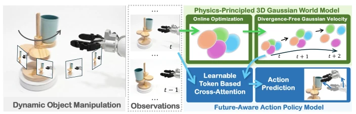
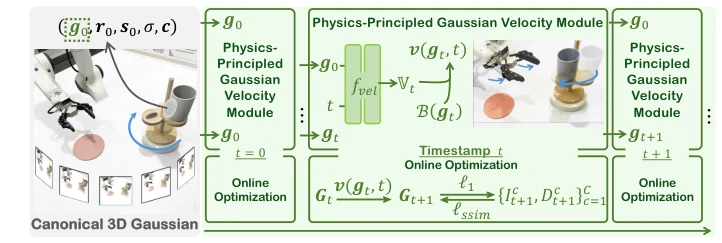
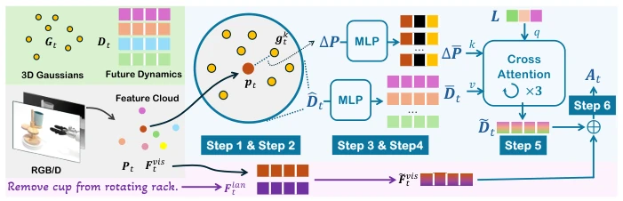
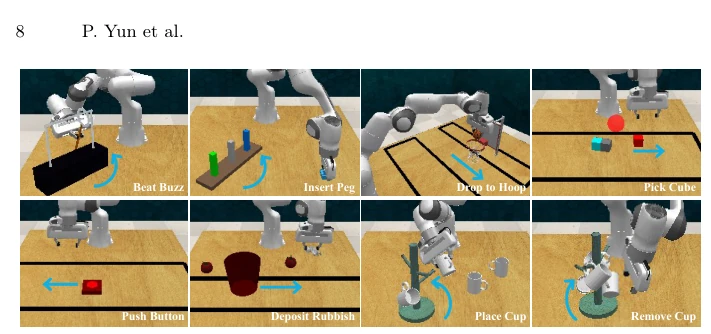
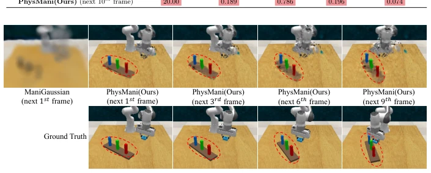
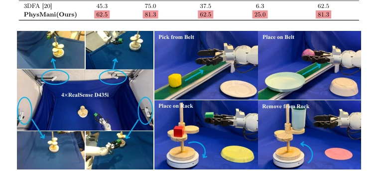
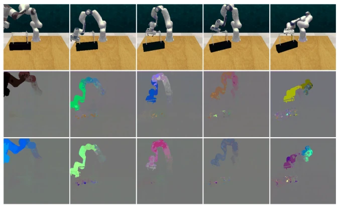
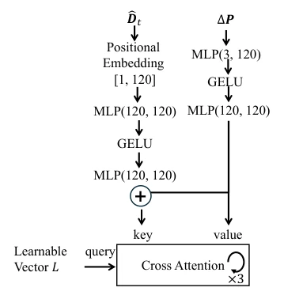
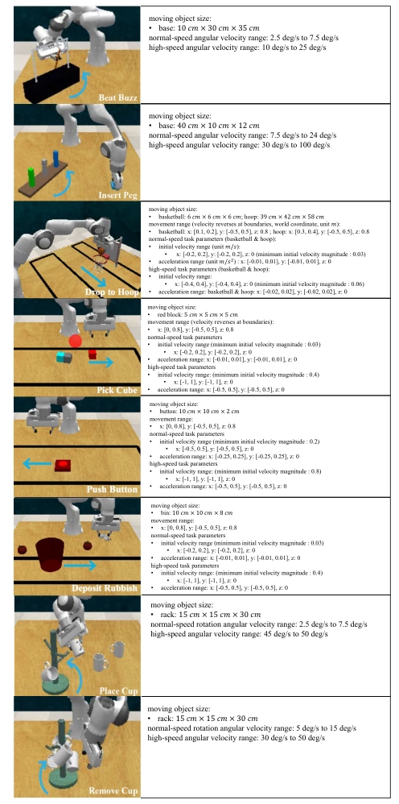

PhysMani: Physics-principled 3D World Model for Dynamic Object Manipulation
Peng Yun, Shouwang Huang, Hao Li, Jinxi Li, Jianan Wang, Bo Yang abspdf
论文点评Review
PhysMani 试图用物理原则修正 3D 世界模型在动态操作中的“幻觉”。它最大的卖点是把 3D Gaussian 和物理定律绑在一起，搞了个无散度速度场，这比那些只管生成逼真视频不管物理守恒的 WM 强多了。不过，3DGS 的在线优化虽然号称快，但在高动态场景下，累积误差会不会导致策略崩盘？另外，PhysMani-Bench 虽然填补了空白，但 16 个任务对于“通用”来说还是有点少，尤其是真实世界测试只有 4 个任务，泛化性存疑。总的来说，这是一个在“物理可解释性”和“实时性”之间找平衡的聪明做法，但计算开销和复杂场景下的鲁棒性仍是隐忧，别指望它能立刻取代所有端到端策略。
PhysMani attempts to correct the "hallucinations" of 3D world models in dynamic manipulation using physical principles. Its main selling point is binding 3D Gaussians with physical laws to create a divergence-free velocity field, which is far superior to WMs that only generate realistic videos without considering physical conservation. However, although 3DGS online optimization claims to be fast, in high-dynamic scenarios, could cumulative errors lead to strategy collapse? Additionally, although PhysMani-Bench fills the gap, 16 tasks are still somewhat few for "generalization", especially with only 4 tasks in real-world testing, raising doubts about generalization. Overall, this is a smart approach to find a balance between "physical interpretability" and "real-time performance", but computational overhead and robustness in complex scenarios remain concerns; do not expect it to immediately replace all end-to-end strategies.
研究动机Motivation
具身智能在动态物体操作上面临严峻挑战。现有 VLAs [29, 48] 和 World Models [17, 39] 多关注静态或准静态任务，缺乏对 3D 几何和物理动态的准确感知。具体不足有三：一是学习的世界表示缺乏显式 3D 场景几何意识；二是生成的未来帧虽视觉逼真，但常违反物理定律 [51]；三是链式大模型推理延迟高，不适合时间敏感操作。现有动态操作工作如乒乓球 [16] 或传送带抓取 [3, 65, 67] 往往局限于特定简化场景，无法提供开放环境下的通用框架。PhysMani 旨在解决这些痛点，通过物理原则建模实现快速准确的未来动力学预测。
Embodied intelligence faces severe challenges in dynamic object manipulation. Existing VLAs [29, 48] and World Models [17, 39] mostly focus on static or quasi-static tasks, lacking accurate perception of 3D geometry and physical dynamics. There are three specific shortcomings: first, the learned world representation lacks explicit 3D scene geometry awareness; second, although generated future frames are visually realistic, they often violate physical laws [51]; third, chain-of-thought large model reasoning latency is high, unsuitable for time-sensitive operations. Existing dynamic manipulation works such as ping pong [16] or conveyor belt grasping [3, 65, 67] are often limited to specific simplified scenarios and cannot provide a general framework for open environments. PhysMani aims to solve these pain points, achieving fast and accurate future dynamics prediction through physical principle modeling.
The PhysMani framework consists of a physics-principled 3D Gaussian world model and a future-aware action policy model, working in parallel. The world model is improved based on FreeGave [37], with the core being the Online Optimization mechanism. It first initializes Canonical 3D Gaussian to represent scene geometry and appearance, then learns 6 basic velocity components (linear and angular velocity) through the Physics-principled Gaussian Velocity Module, constructs a divergence-free velocity field, ensuring predictions comply with physical laws. The Online Optimization algorithm uses RGB-D data in real-time to update Gaussian positions, rotations, and velocities, ensuring low latency. The policy model is based on 3DFA [20], adopting a Cross-Attention module with learnable tokens. It fuses the 3D scene future dynamics (velocity components) predicted by the world model with visual tokens, making action prediction explicitly dependent on target future motion. Specific steps include: retrieving nearby Gaussians, computing relative offsets, encoding via MLP, and using learnable vectors as Query for attention fusion. Finally, Rectified Flow denoising predicts the end-effector trajectory. The entire process is lightweight, supports fast prediction and execution, effectively solving latency and physics consistency issues in dynamic manipulation.
The paper proposes PhysMani-Bench, containing 16 dynamic tasks (e.g., hitting rotating buzz, inserting rotating peg), covering normal and high-speed variants. Baselines include Act3D [19], 3DDA [30], 3DFA [20], ManiGaussian [47], etc. Evaluation metrics are Success Rate (SR) and Future Frame Prediction Quality (PSNR, SSIM, Traj. Err.). PhysMani's average SR is 8.1 points higher than 3DFA in simulation, and future frame prediction error is significantly lower than ManiGaussian. Real-world testing on 4 tasks, success rate is also better than 3DFA. Ablation experiments show removing velocity components or learnable token leads to significant performance drop. In terms of computational efficiency, PhysMani inference is about 272.8ms/frame, better than FreeGave's 607ms, validating the effectiveness of online optimization.
其他图片Other Figures

Fig. 1: The overall framework of our method. It features a physics-principled 3D Gaus- sian world model and a future-aware action policy model.

Fig. 2: The left panel shows the canonical 3D Gaussian module. The top-right panel shows the physics-principled Gaussian velocity module, and the bottom-right panel illustrates the online optimization process.

Fig. 3: The left block shows the encoding of visual observations and language. The right block shows the incorporation of 3D scene future dynamics for action prediction.

Fig. 4: Examples of diverse and challenging dynamic tasks in our PhysMani-Bench. The blue arrows illustrate the complex motions of dynamic targets.

Fig. 5: Qualitative comparison of future frame prediction. Red circles highlight that our method can accurately predict the movement of dynamic targets.

Fig. 7: Illustration of the physical robot setup and real-world dynamic tasks. The robot is Astribot S1 [18].

Fig. 9: Visualizations of the learned six basic velocity components.

Fig. 11: The network to process ∆P and ˆ Dt to obtain future-aware tokens At.

Fig. 12: Detailed physical parameters of our PhysMani-bench tasks. For example, the movement range "basketball: x: [0.0, 0.3], y: [-0.5, 0.5], z: 0.8" indicates that the bas- ketball’s motion is restricted to a rectangular region in the xy-plane which spans from 0.0 ∼0.3m along the x-axis and −0.5 ∼0.5m along the y-axis at a fixed height of z = 0.8 m.